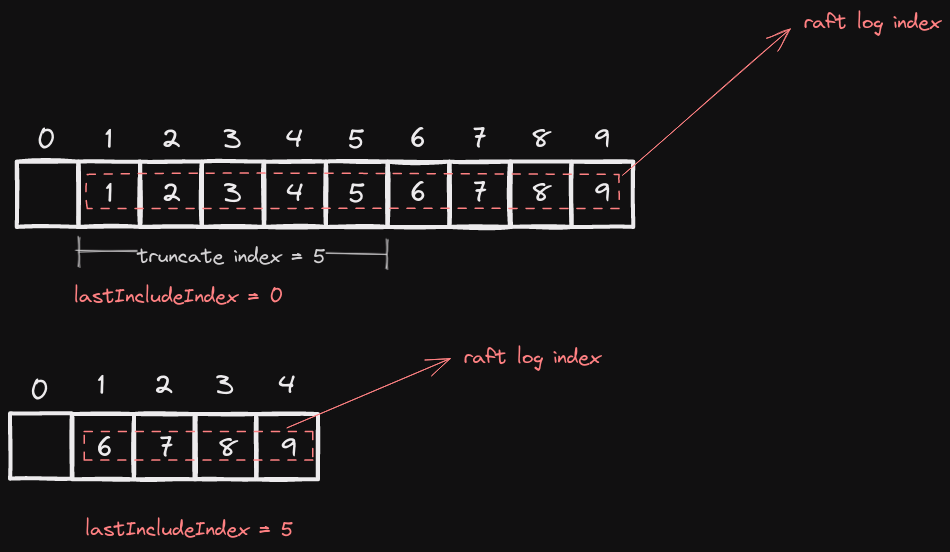

MIT6.5840 Lab2
Last updated on 10 months ago
Lab 2
Prerequisite
Lab 2 的难度远高于 Lab 1
的难度，因此一定要仔细阅读官方提供的资料：
- Lab 2 Instructions
- Raft Paper
- Raft Official Website
- Student's Guide
- Effective Debug
- Raft Q&A
- Diagram of Interaction
此外，我在实验过程中也查询了许多其他的资料，在此我将十分有用的列出来：
- Raft Overview
- Understanding Raft
- A series of articles on constructing Raft
- Raft Optimization in TiKV
由于很多问题十分的隐蔽，因此如果被某个问题卡住的时候，可以去睡一觉或者闭上眼睛来思考这个问题，这将有助于你不局限在某些细节当中
Failure Classification
我们首先考察我们可能遇到的问题有哪些。对于一个集群当中的机器，它会遇到以下两种问题
Server CrashNetwork Partition or Network Delay
对于 Crash，我们只需要在状态更改的时候对其进行
persist，这个问题便可以轻松解决，重点在于
Network 的部分
在 labrpc.go 的 processReq
函数中，我们可以看到网络可能出现的错误
在 RPC 发送时有如下代码：
1 | |
可以看到，RPC
从发送端到接收端必然会延迟
0 - 26 ms，并且有 \(10\%\)
的概率会丢包
在 RPC 返回时有如下代码：
1 | |
可以看到，在 RPC 返回时有 \(10\%\) 的概率会丢包，有 \(60\%\) 的概率会延迟
200 - 2200 ms
除此之外，哪怕不丢包，由于各个 RPC
会收到延迟，因此它们会乱序到达。换句话说，对于所有的
RPC，我们都需要保证其幂等性：如果多个相同的
RPC 先后到达，那么最终的结果等价于执行单个
RPC；如果新的 RPC 先于旧的 RPC
到达，那么最终的结果等价于执行新的 RPC
Semantic
RequestVote RPC
基本上，按照 figure 2
中所描述的那样实现，便已经保证了幂等性，我们不需要做额外的操作
AppendEntries RPC
在对日志进行 up-to-date 的判断时，可以隐式地保证
PrevLogIndex 较大的 RPC 不会被
PrevLogIndex 较小的 RPC
覆盖，需要注意的是日志的添加
在我们将 args.Entries 添加到 follower
时，如果 follower 包含全部的
args.Entries，那么我们不能截断
follower 的日志；如果 args.Entries
中有某些日志是 follower 没有的，我们便将那些日志添加在
follower 的后面；当且仅当
args.Entries 与 follower
的日志存在冲突，我们才截断 follower 的日志
InstallSnapshot RPC
在我的实现里面，完全按照 figure 13
无法取得正确的结果，因此这里我会加上我自己的理解
snapshot 的本质在于，我们将日志的某个前缀截断，然后用
lastIncludeIndex 和 lastIncludeTerm
来代替这个前缀
我将日志的 index 记为
globalIndex，而每个节点的日志索引记为
localIndex。在没有 lastIncludeIndex
时日志的初始下标从 0 + 1 开始，而在加上之后初始下标则从
lastIncludeIndex + 1 开始。因此，二者的转换关系如下：
1 | |
关于这里为什么需要传入
lastIncludeIndex而不是直接使用rf.lastIncludeIndex，我在下面的concurrent Issue部分会详细说明
关键在于初始下标从 0 变为
lastIncludeIndex，其余的一切照旧
由于 raft 的日志从 1
开始，在我的实现中所有的节点都会预先写入一个 localIndex
为零的空日志。在进行截断后，localIndex 为零的日志的
index 和 term 可以被赋值为
lastIncludeIndex 和 lastIncludeTerm，这样在
AE 中可以省去一些多余的逻辑

由于 IS 会替代一次 AE，因此我们需要重置
election timeout；除此之外，由于需要保证 IS
的幂等性，只有当
args.LastIncludeIndex > rf.lastIncludeIndex，我们才会执行
IS RPC
除了对日志进行阶段，snapshot, rf.lastIncludeIndex, rf.lastIncludeTerm
进行赋值外，我们还需要对 rf.lastApplied 和
rf.commitIndex 赋值。原因在于，一旦当前节点接受到一个新的
snapshot，我们便需要将这个 snapshot
提交给上层。而在 config.go 的 ingestSnap
函数中，有如下代码：
1 | |
当我们一旦提交 snapshot 给上层后，我们下一次提交的日志的
globalIndex 必须为 lastIncludeIndex + 1，因此
rf.lastApplied 需要赋值为
args.LastIncludeIndex；而 rf.commitIndex 则与
args.LastIncludeIndex 取较大值
对于 leader 而言，如果
nextIndex <= lastIncludeIndex，那么这个时候就需要发送一次
IS（这也是 leader 发送 IS
的唯一条件）。需要说明的是，这种操作其实非常普遍，因为只要
leader 因为上层调用 Snapshot，它就会更新自己的
lastIncludeIndex，这个时候 nextIndex
就无法保证总是能够大于 lastIncludeIndex
相应地，leader 发送完 IS 之后需要将
nextIndex 重置为 lastIncludeIndex + 1
Persist
我们除了需要对 currentTerm, voteFor, []log 做
persist 之外，还需要对
lastIncludeIndex, lastIncludeTerm, snapshot 做
persist
额外需要注意的是，我们需要将
lastApplied, commitIndex, nextIndex, matchIndex
的值分别赋值成：lastIncludeIndex, lastIncludeIndex, lastIncludeIndex + 1, lastIncludeIndex。这是因为我们的初始值从
0 变为了 lastIncludeIndex
Snapshot
在 config.go 中有如下代码：
1 | |
不难发现，每固定提交 10 个日志就会执行一次
snapshot，这种设计在我的代码中产生了一个问题：
首先我在向上层提交日志的时候是没有加锁的，如果在我提交的时候，当前节点收到了来自
leader 的 IS 并更新了自己的
lastApplied，这便导致了我们下一次提交的日志的
globalIndex 必须为
lastApplied + 1。而我们提交日志的时候是不加锁的，因此这里必然会产生问题；如果我在提交日志的时候加锁，那么在执行到
Snapshot 的时候我又会再次获取一次锁，这也就导致了死锁
解决这个问题的办法是异步调用 Snapshot，即额外开一个
go routine 来执行 Snapshot 的操作
Slice Concurrent Issue
当我们直接取出某个大小的 slice
时，我们实际上取出的是它的引用，这会造成
data race，这篇文章提供了更多的 slice trick
1 | |
Optimization
Fast rollback
Student's Guide
里面详细介绍了这个优化的实现，这里不过多赘述。其主要思想为以
term 为单位来回退而不是一个一个回退
Asynchronous apply
我们可以在后台开一个线程专门用于提交日志，当条件满足时用条件变量唤醒，之后依次提交日志即可
1 | |
只要当 rf.commitIndex
发生改变时，我们便唤醒该线程。也就是 leader 在
AE 的处理逻辑里面唤醒该线程
Optimizing sending AE
如果不对 AE 的发送逻辑进行更改，那么我们每次只会在
heartbeat timeout 时才发送 AE，而
follower 提交日志的时间会比 leader 晚一个
AE。在最坏情况下，一个日志的同步需要等待两轮
heartbeat timeout
我们定义两种事件均可以发送 AE：
heartbeat超时Start调用或rf.commitIndex被更新
因此，对于 leader
而言，我们可以额外开一个线程，等待这两个事件的发生，即：
1 | |
一旦 Start 被调用，我们便向 sendTrigger
中发送一个消息，这样我们便可以马上发送一次
AE。此时当前日志被 leader 提交、被
follower 赋值。当 leader 接受到当前
AE 的返回结果时，会对其 rf.commitIndex
进行更新，此时我们再次向 sendTrigger 中发送消息，随后
AE 再次被发送，follower
进而会提交该日志。加入此优化后，一个日志的提交可以很快结束
Batching
leader 发送过多次 RPC 会导致这个集群被
RPC 淹没，实际上 leader 可以缓存一些
Start 所添加的日志，然后一次性全部发给
follower。在我的实现里面，我简单的采用了通过
timestamp 来进行
batch（规定数量上限再加上超时的做法或许更好，但我选着了更为简单的策略）
Retransmitting
前面提到，RPC
有可能会被丢弃，在这种情况下其实有可能会发生 election livelock
只要某个 follower
没有收到，那么在集群中所有节点日志一致的情况下，这个
follower 便会成为
leader，此后这个循环可以一直下去
因此我们需要实现重传，保证该消息对方几乎必然可以接受到。由于丢包不可避免，但提升重传此时却可以降低丢包的概率。由于这些
RPC
均相同，因此只要有一个成功到达，那么由于我们实现了幂等性，我们便认为本次的
RPC 没有被丢失
那么剩下的问题是，重传的次数、时间间隔该如何定，以及我们是否需要等待所有的重传
RPC 全部返回
我们以 AE 的重传进行说明。由于 leader
会单独开多个线程来发送
AE，因此重传的次数和时间间隔在我看来并没有严格的限制，我定下的重传次数为
10，重传间隔为 30ms
下一个问题是，我们是否需要等待所有的重传 RPC
的返回。在我看来这个也不需要，leader 发送 AE
是为了保证 follower 不会擅自重启一轮
election，因此在这个意义下，leader 期望的是
follower 收到 AE 并重置
election timeout，至于日志的添加，可以交由下一次的
AE 处理，毕竟我们实现了 AE
的幂等性，多次收到同一个或者乱序收到并不会造成问题
下面是我这部分的代码，稍微需要注意的是，我们不能直接拿
reply 作为 sendAppendEntries
的参数，因为这有可能会被覆盖
1 | |
Others
Concurrent Issue
在我加上了 lastIncludeIndex 之后，我发现我的
nextIndex 不能正确更新，总是比预期值大
rf.lastIncludeIndex，我的 AE
的处理逻辑如下：
1 | |
由于我们在发送 RPC 时不能携带锁，因此我们必然需要在这个
go routine
的前后两个部分分别加锁。这么做的问题在于，在中间发送 AE
的时候，有可能某些变量发生来更改（比如
rf.lastIncludeIndex），那么我们后面对 AE
结果进行处理时便会发生问题
解决的办法非常简单，我们只需要在这个 go routine
的最开始保存我们所需要的所有变量，然后一直使用拷贝即可，这也就是
localIndex2GlobalIndex 和
globalIndex2LocalIndex 需要手动传入
lastIncludeIndex 的原因
Threads Amplification
由于每次 AE 都会开启多个线程来同时发送
RPC，而这多个线程均有可能更改
rf.commitIndex。而在我的设计中，一旦
rf.commitIndex 发送了更改，我们就会发送一次
AE。这种设计存在的问题是，会有大量的后台线程在发送
AE 进而导致程序执行效率缓慢（在我的电脑上，开
-race 的情况下，golang 不允许线程数超过
8128，不要问我是怎么知道的）。一个最简单的解决办法是，无论
rf.commitIndex 被更改了多少次，我们只发送一次消息给
sendTrigger
Limiting the number of logs in AE
在我测试 TestReliableChurn2C 的时候，有的时候会出现
failed to reach agreement
这个问题。我检查日志的时候发现，leader 会向
follower 一次性发送上千条日志，然后 follower
全部复制再全部提交，导致没有 one
函数的测试超时。因此我考虑给 AE 的日志添加大小限制
需要改动的地方除了 leader 发送 AE
时规定大小外，还需要修改 AE RPC
的处理逻辑。在我最开始的代码中，对 rf.commitIndex
的更改部分如下（已省略 lastIncludeIndex）：
1 | |
如果限制了 args.Entries
的大小的话，这一段代码是存在问题的。考虑下面这个场景，假设大小限制为
500，leader 的 commitIndex 为
510。当前 follower
从崩溃中恢复过后，拥有的日志数为 505。当
leader 发送 AE 到该 follower
时，会发送下标从 1 到 500
的日志过来（由于当前节点长时间退出集群，因此 leader 的
nextIndex 被不断减少到 1）。然后，当前
follower 的前面 500 个日志与
args.Entries 相同，但后面的那 5
个日志则无法得到保证，换句话说后面的那 5 个日志有可能与
leader 的不一致。如果这个时候我们更新
rf.commitIndex 为
args.LeaderCommit，就会将有可能不一致的日志提交，这显然是我们不希望看到的
一个直观的想法是，让 rf.commitIndex 更新为
rf.commitIndex + len(args.Entries)，但这样无法保证幂等性（因为只要有一个
AE 到达，rf.commitIndex
就会增加）。rf.commitIndex 需要更新为已确认跟
leader 中一致的日志的最大下标与
args.LeaderCommit 的较小值，即：
1 | |
在这里，conflict_index 和 append_index
分别表示 rf.logs 与 args.Entries
冲突的下标
或许还有另外一种办法是限制一次提交日志的数量，但我并没有实现这个，所以不在此处讨论